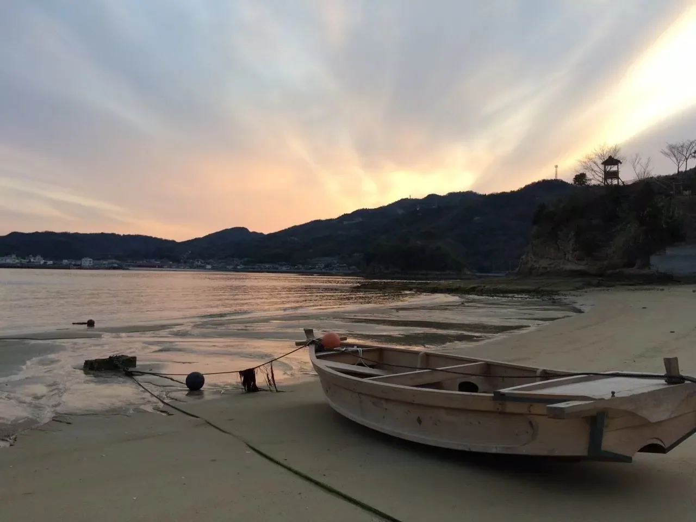

03 / MARITIME HERITAGE
歴史・船・産業
船づくりや海運の歴史から、鵜島と瀬戸内海のつながりをたどります。

鵜島と船づくり
鵜島には、造船所や船大工に関係する施設があったと郷土史資料に記されています。船をつくり、手入れし、海を渡るための技術は、島々を結ぶ生活と深く関わっていました。
和船から近代の船へ
瀬戸内海では、木造の和船から和洋折衷船、機帆船へと船の姿が変化してきました。愛媛県の生活文化資料には、船大工への聞き取りを通じて技術の変遷が記録されています。これらは瀬戸内海全体の歴史であり、すべての船種が鵜島で造られたことを意味するものではありません。

海運と島の仕事
船は人と物資を運び、島の生活を支えてきました。鵜島の産業を考えるとき、船の仕事とともに、漁業や農業などの営みにも目を向けることができます。
もう少し、島を歩いてみる？
鵜島の風景や物語を、ほかのページでも紹介しています。
鵜島のトップページへ ↗ISLAND PHOTO JOURNAL
船とともにある島